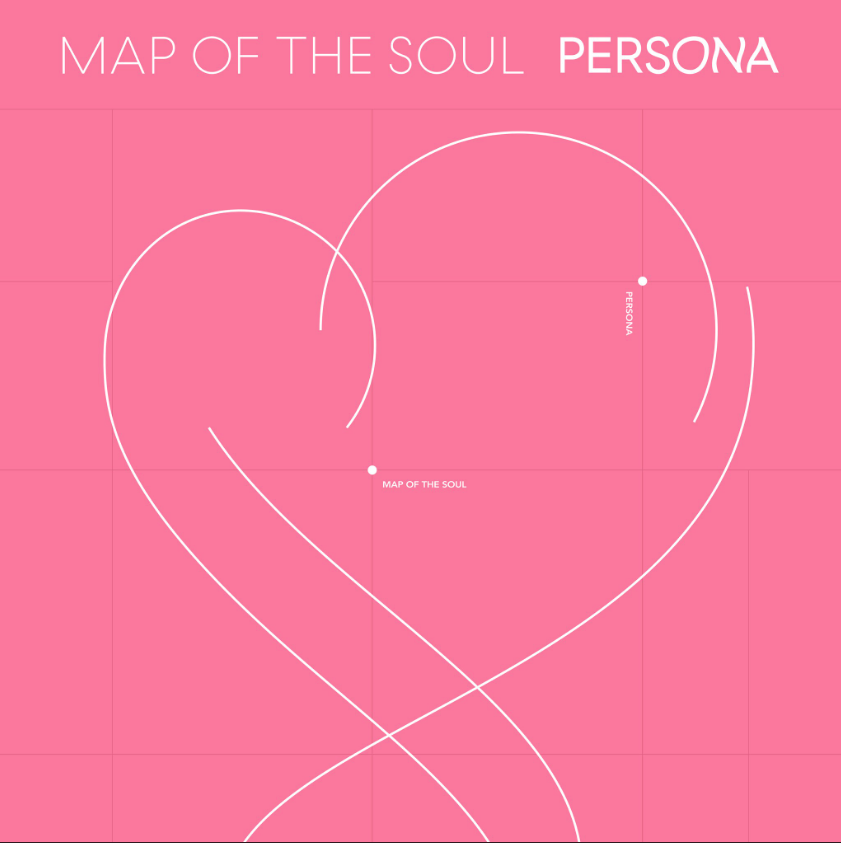

Music
'음악'은 힘든 하루를 마치고 잠들기 전 지친 하루를 달래주는 존재이기도 하며 반대로 기분 좋은 날 더 기분이 좋아지게 해주는 존재이다. 내 인생에서 음악은 없어선 않되는 존재이다. 사실 취미 그 이상의 존재라고 생각된다.
음악 감상 영화 시청 유튜브 시청 등 여러 취미를 즐깁니다!
'음악'은 힘든 하루를 마치고 잠들기 전 지친 하루를 달래주는 존재이기도 하며 반대로 기분 좋은 날 더 기분이 좋아지게 해주는 존재이다. 내 인생에서 음악은 없어선 않되는 존재이다. 사실 취미 그 이상의 존재라고 생각된다.
'영화'는 내 인생에 정말 많은 부분을 차지했다. 지금까지 본 영화만 600편이 넘는다. 영화를 보고 있으면 잡 생각이 사라져서 영화 보는 것을 즐긴다. 특히 쿠엔틴 타란티노 감독의 팬이다. 왼쪽 그림은 영화 펄프픽션의 한 장면을 그린 것 이다.
'유튜브'는 어느 순간 부터 TV보다 더 많이 자주 보게 되는 플랫폼이 되버렸다. 개인적으로 TV에서 방영하는 프로그램보다 훨씬 다양하고 재미있는 것들이 많다. 그래서 TV에서도 유튜브의 촬영 편집 방식을 많이 가지고 와서 방영하는 것 같다.